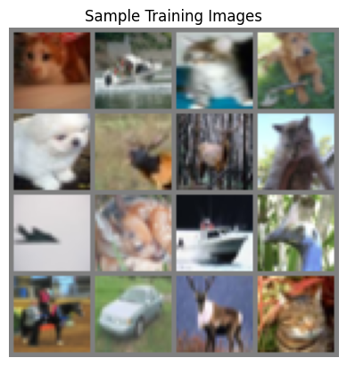
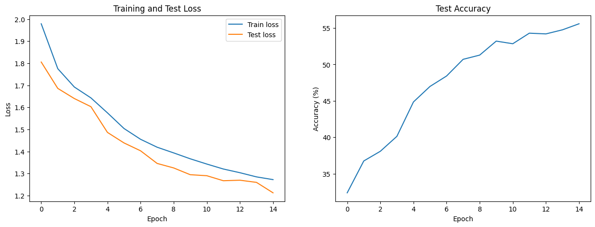
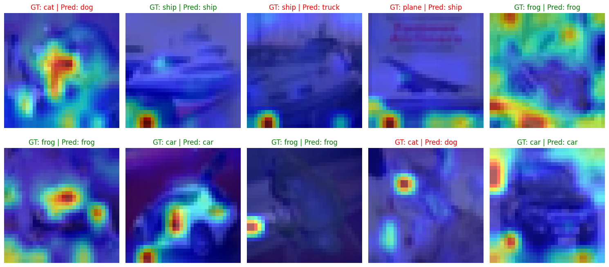

We’ll dive into the Vision Transformer (ViT), a Transformer architecture that can achieve state-of-the-art results in image recognition despite not having inductive biases like CNNs.
bare-bones-ml
code
Author
Devansh Lodha
Published
June 1, 2025
We’ll begin our PyTorch implementations with the Vision Transformer (ViT), a model that revolutionized computer vision by demonstrating that the Transformer architecture, originally designed for Natural Language Processing (NLP), could achieve state-of-the-art results in image recognition.
The core insight of the paper “An Image is Worth 16x16 Words” is surprisingly simple: what if we treat an image as a sequence of patches, just like a sentence is a sequence of words?
In this post, we will: 1. Walk through the implementation of each ViT component from our library file. 2. Explain how an image is deconstructed into a sequence of patch embeddings. 3. Detail the structure of the Transformer Encoder and its sub-layers. 4. Run a live demonstration, training a small ViT on the CIFAR-10 dataset and visualizing its attention mechanism.
Code
import torchfrom torch import nnimport torch.optim as optimimport torchvisionimport torchvision.transforms as transformsfrom tqdm import tqdmimport matplotlib.pyplot as pltimport numpy as npimport mathimport syssys.path.append('../') # Import the ViT model from our library filefrom pytorch_implementations.vit import ViTForClassfication# Device Configurationif torch.backends.mps.is_available(): device = torch.device("mps")print("Using MPS device.")elif torch.cuda.is_available(): device = torch.device("cuda")print("Using CUDA device.")else: device = torch.device("cpu")print("Using CPU device.")print("Setup complete.")
Using MPS device.
Setup complete.
Part 1: From Pixels to a Sequence - The ViT Embedding Layer
The first challenge in adapting Transformers for vision is converting a 2D grid of pixels into the 1D sequence of vectors that a Transformer expects. The ViT’s Embeddings layer accomplishes this through a three-step process.
Step 1.1: Patching and Projection (PatchEmbeddings)
The image is first split into fixed-size, non-overlapping patches. This is efficiently done using a Conv2d layer where the kernel size and stride are equal to the patch size. This layer processes each patch independently and performs a linear projection, mapping it to a vector of hidden_size.
Here is the full implementation from our library:
# from pytorch_implementations/vit.pyclass PatchEmbeddings(nn.Module):""" Convert the image into patches and then project them into a vector space. """def__init__(self, config):super().__init__()self.image_size = config["image_size"]self.patch_size = config["patch_size"]self.num_channels = config["num_channels"]self.hidden_size = config["hidden_size"]# Calculate the number of patches from the image size and patch sizeself.num_patches = (self.image_size //self.patch_size) **2# Create a projection layer to convert the image into patches# The layer projects each patch into a vector of size hidden_sizeself.projection = nn.Conv2d(self.num_channels, self.hidden_size, kernel_size=self.patch_size, stride=self.patch_size)def forward(self, x):# (batch_size, num_channels, image_size, image_size) -> (batch_size, num_patches, hidden_size) x =self.projection(x) x = x.flatten(2).transpose(1, 2)return x
Step 1.2: Adding the [CLS] Token and Positional Information
The sequence of patch embeddings now captures the content of the image, but it’s missing two crucial pieces of information:
A Global Representation ([CLS] Token): A special, learnable vector is prepended to the sequence. The Transformer will use the final output corresponding to this token as the aggregate representation of the entire image for classification.
Positional Information: Since the attention mechanism is permutation-invariant, we must add learnable positional embeddings to inform the model about the original location of each patch.
Our Embeddings class combines these steps into a single module.
# from pytorch_implementations/vit.pyclass Embeddings(nn.Module):""" Combine the patch embeddings with the class token and position embeddings. """def__init__(self, config):super().__init__()self.config = configself.patch_embeddings = PatchEmbeddings(config)# Create a learnable [CLS] tokenself.cls_token = nn.Parameter(torch.randn(1, 1, config["hidden_size"]))# Create position embeddings for the [CLS] token and the patch embeddingsself.position_embeddings =\ nn.Parameter(torch.randn(1, self.patch_embeddings.num_patches +1, config["hidden_size"]))self.dropout = nn.Dropout(config["hidden_dropout_prob"])def forward(self, x): x =self.patch_embeddings(x) batch_size, _, _ = x.size()# Expand the [CLS] token to the batch size cls_tokens =self.cls_token.expand(batch_size, -1, -1)# Concatenate the [CLS] token to the beginning of the input sequence x = torch.cat((cls_tokens, x), dim=1)# Add positional embeddings x = x +self.position_embeddings x =self.dropout(x)return x
With this, the image preprocessing is complete. We now have a sequence of embeddings ready to be fed into the standard Transformer Encoder.
Part 2: The Heart of ViT - The Transformer Encoder
Now that we have a sequence of embeddings, we can pass it to the heart of the model: the Transformer Encoder. The encoder’s job is to process this sequence, allowing each patch embedding to interact with every other patch embedding, thereby learning the global context and features of the image.
The ViT Encoder is simply a stack of N identical layers, which we call Blocks. Stacking these blocks allows the model to build up progressively more complex and abstract representations of the image.
Here’s the top-level Encoder class from our library. It’s a straightforward container for the stack of Blocks.
# from pytorch_implementations/vit.pyclass Encoder(nn.Module):""" The transformer encoder module. """def__init__(self, config):super().__init__()# Create a list of transformer blocksself.blocks = nn.ModuleList([])for _ inrange(config["num_hidden_layers"]): block = Block(config)self.blocks.append(block)def forward(self, x, output_attentions=False):# Calculate the transformer block's output for each block all_attentions = []for block inself.blocks: x, attention_probs = block(x, output_attentions=output_attentions)if output_attentions: all_attentions.append(attention_probs)# Return the encoder's output and the attention probabilities (optional)ifnot output_attentions:return (x, None)else:return (x, all_attentions)
Now, let’s break down the anatomy of a single Block.
The Anatomy of a Block
Each Block has two main sub-layers: 1. Multi-Head Self-Attention: Allows each patch to weigh the importance of all other patches and update its own representation accordingly. 2. Feed-Forward Network (MLP): A simple fully-connected network that provides additional computational capacity and transforms the features learned by the attention layer.
A crucial design element is the use of Residual Connections and Layer Normalization, applied around each of the two sub-layers. In our implementation, we use a “Pre-LayerNorm” structure, which applies normalization before the sub-layer. This often leads to more stable training than the original “Post-LayerNorm” design.
# from pytorch_implementations/vit.pyclass Block(nn.Module):""" A single transformer block. """def__init__(self, config):super().__init__()self.use_faster_attention = config.get("use_faster_attention", False)ifself.use_faster_attention:self.attention = FasterMultiHeadAttention(config)else:self.attention = MultiHeadAttention(config)self.layernorm_1 = nn.LayerNorm(config["hidden_size"])self.mlp = MLP(config)self.layernorm_2 = nn.LayerNorm(config["hidden_size"])def forward(self, x, output_attentions=False):# Self-attention + residual connection attention_output, attention_probs =\self.attention(self.layernorm_1(x), output_attentions=output_attentions) x = x + attention_output# Feed-forward network + residual connection mlp_output =self.mlp(self.layernorm_2(x)) x = x + mlp_outputifnot output_attentions:return (x, None)else:return (x, attention_probs)
A Deeper Dive: Multi-Head Self-Attention (MHSA)
The self-attention mechanism is the core of the Transformer. For each patch embedding in the sequence, it generates three vectors: a Query (Q), a Key (K), and a Value (V).
The Query represents the current patch’s request for information.
The Key represents the “content” of another patch that can be queried.
The Value represents the actual information that another patch holds.
The mechanism works like a database lookup. The Query from one patch is compared with the Keys from all other patches to produce attention weights. These weights determine how much of each patch’s Value should be summed up to form the output for the current patch.
Instead of doing this once, MHSA does it multiple times in parallel with different, independent sets of Q, K, and V projections. Each of these parallel computations is called an “attention head.” This allows the model to learn different kinds of relationships simultaneously.
Our library includes two versions. The first, AttentionHead, is a clear, unoptimized implementation of a single head, which helps with understanding.
# from pytorch_implementations/vit.pyclass AttentionHead(nn.Module):""" A single attention head. This module is used in the MultiHeadAttention module. """def__init__(self, hidden_size, attention_head_size, dropout, bias=True):super().__init__()self.hidden_size = hidden_sizeself.attention_head_size = attention_head_size# Create the query, key, and value projection layersself.query = nn.Linear(hidden_size, attention_head_size, bias=bias)self.key = nn.Linear(hidden_size, attention_head_size, bias=bias)self.value = nn.Linear(hidden_size, attention_head_size, bias=bias)self.dropout = nn.Dropout(dropout)def forward(self, x):# Project the input into query, key, and value query =self.query(x) key =self.key(x) value =self.value(x)# Calculate the attention scores attention_scores = torch.matmul(query, key.transpose(-1, -2)) attention_scores = attention_scores / math.sqrt(self.attention_head_size) attention_probs = nn.functional.softmax(attention_scores, dim=-1) attention_probs =self.dropout(attention_probs)# Calculate the attention output attention_output = torch.matmul(attention_probs, value)return (attention_output, attention_probs)
The MultiHeadAttention module then combines these individual heads.
# from pytorch_implementations/vit.pyclass MultiHeadAttention(nn.Module):""" Multi-head attention module (Unoptimized Version). """def__init__(self, config):super().__init__()self.hidden_size = config["hidden_size"]self.num_attention_heads = config["num_attention_heads"]self.attention_head_size =self.hidden_size //self.num_attention_headsself.all_head_size =self.num_attention_heads *self.attention_head_sizeself.qkv_bias = config["qkv_bias"]self.heads = nn.ModuleList([])for _ inrange(self.num_attention_heads): head = AttentionHead(self.hidden_size,self.attention_head_size, config["attention_probs_dropout_prob"],self.qkv_bias )self.heads.append(head)self.output_projection = nn.Linear(self.all_head_size, self.hidden_size)self.output_dropout = nn.Dropout(config["hidden_dropout_prob"])def forward(self, x, output_attentions=False): attention_outputs = [head(x) for head inself.heads] attention_output = torch.cat([attention_output for attention_output, _ in attention_outputs], dim=-1) attention_output =self.output_projection(attention_output) attention_output =self.output_dropout(attention_output)ifnot output_attentions:return (attention_output, None)else: attention_probs = torch.stack([attention_probs for _, attention_probs in attention_outputs], dim=1)return (attention_output, attention_probs)
For efficiency, it’s common to merge the Q, K, and V projection layers into a single, larger linear layer and then split the result. Our FasterMultiHeadAttention class does exactly this, and it’s the version we’ll use in our training demo.
The second sub-layer in each Block is a simple Feed-Forward Network (FFN). It consists of two linear layers with a GELU (Gaussian Error Linear Unit) activation in between. GELU is a smoother alternative to ReLU and is standard in modern Transformers.
# from pytorch_implementations/vit.pyclass NewGELUActivation(nn.Module):""" Implementation of the GELU activation function. """def forward(self, input):return0.5*input* (1.0+ torch.tanh(math.sqrt(2.0/ math.pi) * (input+0.044715* torch.pow(input, 3.0))))class MLP(nn.Module):""" A multi-layer perceptron module. """def__init__(self, config):super().__init__()self.dense_1 = nn.Linear(config["hidden_size"], config["intermediate_size"])self.activation = NewGELUActivation()self.dense_2 = nn.Linear(config["intermediate_size"], config["hidden_size"])self.dropout = nn.Dropout(config["hidden_dropout_prob"])def forward(self, x): x =self.dense_1(x) x =self.activation(x) x =self.dense_2(x) x =self.dropout(x)return x
Finally, we assemble everything into the ViTForClassfication model. It encapsulates the Embeddings layer, the Encoder, and a final linear classifier head that maps the output of the [CLS] token to the desired number of classes. It also includes a weight initialization scheme, which is crucial for stable training.
Now that we have built and understood all the components of the Vision Transformer, let’s put it all together and train a model. We will use the CIFAR-10 dataset, which consists of 60,000 32x32 color images in 10 classes.
Due to computational constraints, we will train a “tiny” version of ViT. This model is much smaller than the ones used in the original paper but is sufficient to demonstrate the core concepts and see the attention mechanism in action.
Code
# Define Model and Training Configurationconfig = {"patch_size": 4, # Input image size 32x32 -> 8x8 patches"hidden_size": 48,"num_hidden_layers": 4,"num_attention_heads": 4,"intermediate_size": 4*48, # 4 * hidden_size"hidden_dropout_prob": 0.1,"attention_probs_dropout_prob": 0.1,"initializer_range": 0.02,"image_size": 32,"num_classes": 10,"num_channels": 3,"qkv_bias": True,"use_faster_attention": True, # Use the optimized attention implementation}# 2. Data Preparationdef prepare_data(batch_size=256):"""Loads and transforms the CIFAR-10 dataset for ViT."""# Data augmentation and normalization for training train_transform = transforms.Compose([ transforms.ToTensor(), transforms.Resize((config["image_size"], config["image_size"])), transforms.RandomHorizontalFlip(p=0.5), transforms.RandomResizedCrop((config["image_size"], config["image_size"]), scale=(0.8, 1.0)), transforms.Normalize((0.5, 0.5, 0.5), (0.5, 0.5, 0.5)) ])# Just normalization for validation test_transform = transforms.Compose([ transforms.ToTensor(), transforms.Resize((config["image_size"], config["image_size"])), transforms.Normalize((0.5, 0.5, 0.5), (0.5, 0.5, 0.5)) ]) trainset = torchvision.datasets.CIFAR10(root='./data', train=True, download=True, transform=train_transform) testset = torchvision.datasets.CIFAR10(root='./data', train=False, download=True, transform=test_transform) trainloader = torch.utils.data.DataLoader(trainset, batch_size=batch_size, shuffle=True, num_workers=2) testloader = torch.utils.data.DataLoader(testset, batch_size=batch_size, shuffle=False, num_workers=2) classes = ('plane', 'car', 'bird', 'cat', 'deer', 'dog', 'frog', 'horse', 'ship', 'truck')return trainloader, testloader, classestrainloader, testloader, classes = prepare_data()print("Data prepared successfully.")# Let's visualize one batch of images to see what they look likeimages, _ =next(iter(trainloader))img_grid = torchvision.utils.make_grid(images[:16], nrow=4)plt.imshow(img_grid.permute(1, 2, 0) *0.5+0.5) # Un-normalizeplt.title("Sample Training Images")plt.axis('off')plt.show()
Data prepared successfully.

Code
# 3. Training Setupmodel = ViTForClassfication(config).to(device)optimizer = optim.AdamW(model.parameters(), lr=1e-3, weight_decay=1e-2)loss_fn = nn.CrossEntropyLoss()print(f"Number of parameters: {sum(p.numel() for p in model.parameters() if p.requires_grad):,}")# 4. Training and Evaluation Functionsdef train_one_epoch(epoch_index): model.train() running_loss =0.# Wrap trainloader with tqdm for a progress barfor data in tqdm(trainloader, desc=f"Training Epoch {epoch_index}"): inputs, labels = data[0].to(device), data[1].to(device) optimizer.zero_grad() outputs, _ = model(inputs) loss = loss_fn(outputs, labels) loss.backward() optimizer.step() running_loss += loss.item()return running_loss /len(trainloader)def evaluate(): model.eval() correct =0 total =0 running_loss =0.with torch.no_grad():for data in testloader: images, labels = data[0].to(device), data[1].to(device) outputs, _ = model(images) loss = loss_fn(outputs, labels) running_loss += loss.item() _, predicted = torch.max(outputs.data, 1) total += labels.size(0) correct += (predicted == labels).sum().item() accuracy =100* correct / total avg_loss = running_loss /len(testloader)return accuracy, avg_loss# 5. Run Trainingepochs =15# 100+ epochs are needed for good performancetrain_losses, test_losses, accuracies = [], [], []print("Starting training...")for epoch inrange(epochs): train_loss = train_one_epoch(epoch +1) accuracy, test_loss = evaluate() train_losses.append(train_loss) test_losses.append(test_loss) accuracies.append(accuracy)print(f"Epoch {epoch+1}/{epochs} - Train Loss: {train_loss:.4f}, Test Loss: {test_loss:.4f}, Accuracy: {accuracy:.2f}%")print("Finished training.")
Number of parameters: 119,098
Starting training...
Training Epoch 1: 100%|██████████| 196/196 [00:25<00:00, 7.83it/s]
# 6. Plotting and Visualization# Plotting Loss and Accuracy Curvesfig, (ax1, ax2) = plt.subplots(1, 2, figsize=(15, 5))ax1.plot(train_losses, label="Train loss")ax1.plot(test_losses, label="Test loss")ax1.set_xlabel("Epoch")ax1.set_ylabel("Loss")ax1.legend()ax1.set_title("Training and Test Loss")ax2.plot(accuracies)ax2.set_xlabel("Epoch")ax2.set_ylabel("Accuracy (%)")ax2.set_title("Test Accuracy")plt.show()# Visualizing Attention@torch.no_grad()def visualize_attention(model, output_path=None):""" Visualizes the attention from the [CLS] token to the image patches. """ model.eval()# Get a batch of test images dataiter =iter(testloader) images, labels =next(dataiter) images, labels = images[:10], labels[:10] # Visualize 10 images# Un-normalize for visualization raw_images = images *0.5+0.5 raw_images = raw_images.cpu().numpy() images_gpu = images.to(device)# Get attention maps from the last layer logits, attention_maps = model(images_gpu, output_attentions=True) predictions = torch.argmax(logits, dim=1)# The output `attention_maps` is a list of attention tensors from each block.# We'll visualize the attention from the last block. attention_map = attention_maps[-1]# Average attention across all heads for the [CLS] token# Shape: (batch_size, num_heads, seq_len, seq_len)# We want the attention from the [CLS] token (index 0) to all other tokens cls_attention = attention_map[:, :, 0, 1:].mean(dim=1)# Reshape to a square grid num_patches = cls_attention.size(-1) grid_size =int(math.sqrt(num_patches)) cls_attention = cls_attention.view(-1, grid_size, grid_size)# Resize the attention map to the original image size for overlay resized_attention = nn.functional.interpolate( cls_attention.unsqueeze(1), size=(config["image_size"], config["image_size"]), mode='bilinear', align_corners=False ).squeeze(1)# Plot the images and their attention maps fig, axes = plt.subplots(2, 5, figsize=(15, 7))for i, ax inenumerate(axes.flat): img = np.transpose(raw_images[i], (1, 2, 0)) attn = resized_attention[i].cpu().numpy() gt = classes[labels[i]] pred = classes[predictions[i].cpu()] ax.imshow(img) ax.imshow(attn, alpha=0.6, cmap='jet') ax.set_title(f"GT: {gt} | Pred: {pred}", color=("green"if gt == pred else"red")) ax.axis("off") plt.tight_layout() plt.show()print("\nVisualizing model attention...")visualize_attention(model)

Visualizing model attention...

Conclusion
In this notebook, we have successfully implemented a Vision Transformer from its core components using PyTorch. We saw how to: - Convert an image into a sequence of patch embeddings. - Add special tokens ([CLS]) and positional information. - Process this sequence using a standard Transformer Encoder. - Train the model for a classification task. - Visualize the model’s attention to understand its decision-making process.
Even with a small model and very short training, the attention maps begin to highlight the objects of interest within the images. For example, in the images of cars, the attention is focused on the car’s body, and for animals, it often highlights the head or main body. This demonstrates the remarkable ability of self-attention to learn spatial features without the inductive biases of convolutions.
 Credit:
Credit: